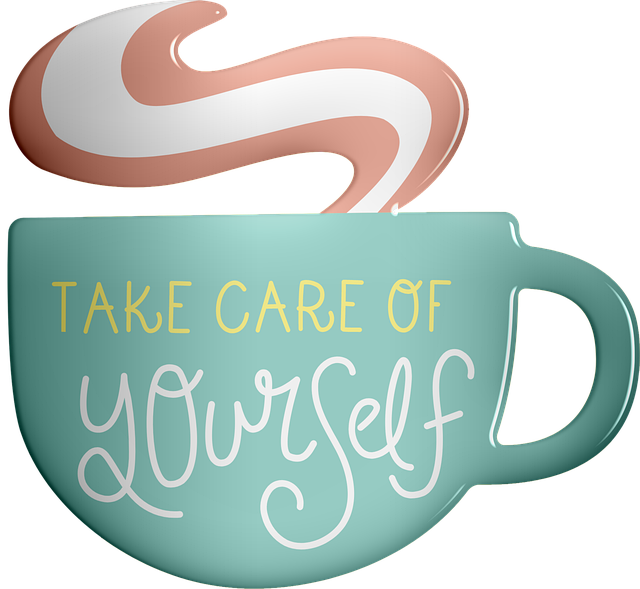

National Suicide Prevention line:
Provides crisis counseling & mental health referrals.
Call 1-800-273-TALK (8255); En español 1-888-628-9454 OR Use Lifeline Chat on the web Crisis Text line:
Crisis counselor that provides support & info.
Text “HELLO” to 741741 Social Media Safety:
Worried about someone on a social media platform? Use this site to contact a safety team:
Support on Social Media : Lifeline
